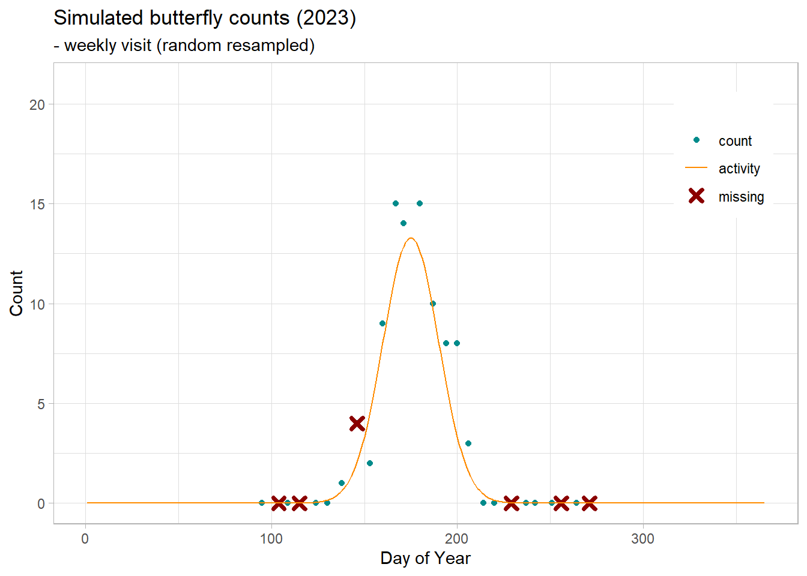

if(!require("data.table")) install.packages("data.table")
if(!require("ggplot2")) install.packages("ggplot2")
if(!require("devtools")) install.packages("devtools")
if(!require("rbms")) devtools::install_github("RetoSchmucki/rbms")
if(!require("butterflyGamSims")) devtools::install_github("cbedwards/butterflyGamSims")
set.seed(13276)Butterfly Counts
Simulation
To demonstrate and assess the method used to compute butterfly abundance indices and the Grassland Butterfly Indicator which involves calculating collated abundance indices from multiple sites and estimating the population trend from a set of indicator species, the best option is to use simulated datasets that provide realistic data with known parameters. The simulation approach allows us to assess the methods’ performance and enables us to control individual parameters and conduct rigorous sensitivity analysis. This will provide useful insight into the method and enable rigorous assessment of its power and limitations. To simulate butterfly count across sites and over multiple iterations, we will use the function developed by Collin Edwards and available in the R packages butterflyGamSims. We will use the simulation to test the GAM method implemented in the R package rbms.
In the first case, we will simulate counts for one site for one year, using a Gaussian curve to depict the adult butterflies’ seasonal phenology (activity curve). The daily counts are generated from a random Poisson process.
btfl_data <- timeseries_sim(nsims=1,
year = c(2023),
doy.samples = seq(from=1, to=365, by=1),
abund.type = "exp",
activity.type = "gauss",
sample.type = "pois",
sim.parms = list(growth.rate = 0,
init.size = 500,
act.mean = 175,
act.sd = 15)
)
btfl_dt1 <- data.table(btfl_data$timeseries)[, .(doy,count)]
btfl_dt2 <- data.table(btfl_data$timeseries)[, .(doy,act)]
flc_col <- 'orange'
cnt_col <- 'darkcyan'
missing_col <- 'red'
GAM_col <- '#483d8b'
btfl_fig <- ggplot() +
geom_point(data=btfl_dt1, aes(x=doy, y=count, colour = "count")) +
geom_line(data = btfl_dt2,
aes(x = doy, y = act, colour = "activity")) +
xlim(1,365) + ylim(0, max(btfl_dt1$count, btfl_dt2$act)) +
scale_colour_manual("",
breaks = c("count", "activity"),
values = c(cnt_col, flc_col)) +
theme_light() +
theme(legend.position = "inside", legend.position.inside = c(0.9, 0.8)) +
labs(title = "Simulated butterfly counts",
subtitle = "- daily visit")
btfl_fig
In the example above, the activity curve represented by the line has a Gaussian shape and counts presented by the points along the curve are independent random samples from a Poisson distribution. Because we sampled a count value for 365 days (day-of-year; doy), the counts are representative of the population of active adult butterflies as if the site was visited every. This implies that a proportion of butterflies are counted more than one day as their lifespan exceeds one day. On Pollard transect, this is how butterfly counts are likely to be counted and reported, but with a different frequency as visits are generally weekly, fortnightly, or even monthly. We can replicate this value by resampling the daily count weekly.
btfl_ts <- data.table(btfl_data$timeseries)
btfl_ts[ , date := as.Date(doy, origin = "2023-01-01")-1]
btfl_ts[ , week := isoweek(date)]
btfl_ts[month(date) != 1 | week < 50, weekday := rowid(week)]
btfl_week_smpl <- btfl_ts[btfl_ts[weekday %in% c(2,3,4,5), .I[sample(.N, 1)], by = week][[2]]]
btfl_fig2 <- ggplot() +
geom_point(data=btfl_week_smpl, aes(x=doy, y=count, colour = "count")) +
geom_line(data = btfl_dt2,
aes(x = doy, y = act, colour = "activity")) +
xlim(1,365) + ylim(0, max(btfl_dt1$count, btfl_dt2$act)) +
scale_colour_manual("",
breaks = c("count", "activity"),
values = c(cnt_col, flc_col)) +
theme_light() +
theme(legend.position = "inside", legend.position.inside = c(0.9, 0.8)) +
labs(title = "Simulated butterfly counts",
subtitle = "- weekly visit (random resampled)")
btfl_fig2
From the weekly visits, counts outside of the monitoring period will not be informed, in many cases these are ‘zeros’ as we expect the monitoring season to align with butterflies’ activity. Some other weeks might be missing from the time series, potentially due to unsuitable weather conditions for monitoring or recorder’s unavailability. We can include these missing visits by resampling a subset of the weekly counts.
btfl_week_smpl2 <- btfl_week_smpl[month(date) %in% c(4:9), ]
prob_vct <- rep(0.5,btfl_week_smpl2[,.N])
prob_vct[1:round(quantile(seq_len(btfl_week_smpl2[,.N]), c(0.25)))] <- 0.75
prob_vct[round(quantile(seq_len(btfl_week_smpl2[,.N]), c(0.75))):btfl_week_smpl2[,.N]] <- 0.75
btfl_week_missing <- btfl_week_smpl2[-sample(.N, round(0.75*.N), prob = prob_vct), ]
btfl_fig3 <- ggplot() +
geom_point(data=btfl_week_smpl2, aes(x=doy, y=count, colour = "count")) +
geom_point(data=btfl_week_missing, aes(x=doy, y=count, colour = "missing"),
shape=4, size=2, stroke=2) +
geom_line(data = btfl_dt2,
aes(x = doy, y = act, colour = "activity")) +
xlim(1,365) + ylim(0, max(btfl_dt1$count, btfl_dt2$act)) +
scale_colour_manual("",
breaks = c("count", "activity", "missing"),
values = c(cnt_col, flc_col, missing_col)) +
theme_light() +
theme(legend.position = "inside", legend.position.inside = c(0.9, 0.8)) +
labs(title = "Simulated butterfly counts",
subtitle = "- weekly visit (random resampled)")
btfl_fig3
Because recorders only report the number of observed butterflies, zeros are generally not reported but can be derived from the visit dates.
visit_sim <- btfl_week_smpl2[, site_id := "site_1"][!date %in% btfl_week_missing$date, .(site_id, date)]
count_sim <- btfl_week_smpl2[, site_id := "site_1"][!date %in% btfl_week_missing$date, .(site_id, date, count)][
count>=1,][, species := "sp1"]
names(visit_sim) <- toupper(names(visit_sim))
names(count_sim) <- toupper(names(count_sim))
ts_date <- rbms::ts_dwmy_table(InitYear = 2023, LastYear = 2023, WeekDay1 = 'monday')
ts_season <- rbms::ts_monit_season(ts_date,
StartMonth = 4,
EndMonth = 9,
StartDay = 1,
EndDay = NULL,
CompltSeason = TRUE,
Anchor = TRUE,
AnchorLength = 2,
AnchorLag = 2,
TimeUnit = 'd')
ts_season_visit <- rbms::ts_monit_site(ts_season, visit_sim)
ts_season_count <- rbms::ts_monit_count_site(ts_season_visit, count_sim, sp = "sp1")
ts_flight_curve <- rbms::flight_curve(ts_season_count,
NbrSample = 300,
MinVisit = 5,
MinOccur = 3,
MinNbrSite = 1,
MaxTrial = 4,
GamFamily = 'nb',
SpeedGam = FALSE,
CompltSeason = TRUE,
SelectYear = NULL,
TimeUnit = 'd')
pheno <- ts_flight_curve$pheno
btfl_fig4 <- ggplot() +
geom_point(data=ts_season_count[ANCHOR == 0 & !is.na(COUNT), ], aes(x=DAY_SINCE, y=COUNT, colour = "count")) +
geom_point(data=btfl_week_missing, aes(x=doy, y=count, colour = "missing"),
shape=4, size=2, stroke=2) +
geom_line(data = btfl_dt2,
aes(x = doy, y = act, colour = "activity")) +
geom_line(data = pheno,
aes(x = trimDAYNO, y = btfl_dt2[,sum(act)]*NM, colour = "GAM_fit")) +
xlim(1,365) + ylim(0, max(btfl_dt2$act,
pheno$NM*btfl_dt2[,sum(act)],
btfl_week_missing$count,
ts_season_count[!is.na(COUNT), COUNT] )) +
scale_colour_manual("",
breaks = c("count", "activity", "missing", "GAM_fit"),
values = c(cnt_col, flc_col, missing_col, GAM_col)) +
theme_light() +
theme(legend.position = "inside", legend.position.inside = c(0.9, 0.8)) +
labs(title = "Simulated butterfly counts",
subtitle = "- Fitting GAM model with rbms")
btfl_fig4
Non Gaussian flight curve
Here we will generate a time series of butterfly counts drawn from a known flight curve (adult activity), using simulation from a Zonhevel model.
btfl_data_zn <- timeseries_sim(nsims=10,
year = c(1:10),
doy.samples = seq(from=0, to=365, by=1),
abund.type = "exp",
activity.type = "zon",
sample.type = "nb",
sim.parms = list(growth.rate = -0.2,
init.size = 500,
act.mean = 175,
act.sd = 15,
theta = 5,
zon.theta = 50,
t0 = 100,
beta = 5,
alpha = 0.05)
)
btfl_dt <- data.table(btfl_data_zn$timeseries)
plot(btfl_dt[years == 1 & sim.id == 1, .(doy,count)], xlim = c(0,365), ylim = c(0, max(btfl_dt$count)))
points(btfl_dt[years == 1 & sim.id == 1, .(doy,act)], type = "l", col = 'orange')
points(btfl_dt[years == 1 & sim.id == 2, .(doy,count)], col = 'magenta')
Simple trend case
In the first scenario, we will apply the method to a simple case where we have one univoltine species that is monitored over 15 years across 100 sites where the populations follow the same trend with a known growth rate.